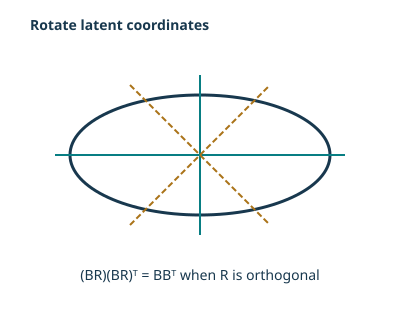
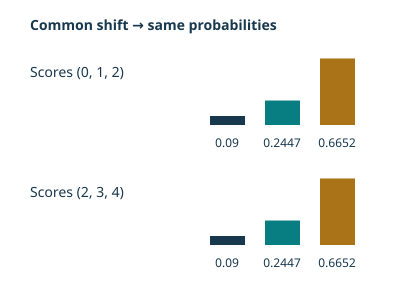
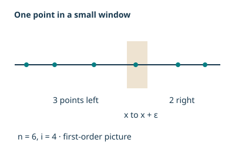
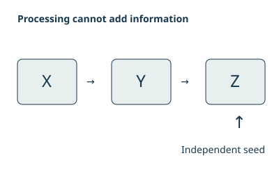
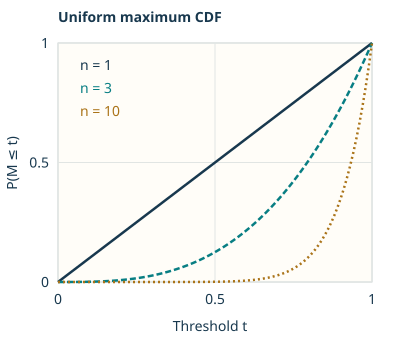

These notes are used for STAT 709 “Mathematical Statistics” at the University of Wisconsin–Madison. They are a learning aid rather than a substitute for a textbook; corrections and questions are welcome.
Starting point. In probability, a distribution is given and we work out what observations it produces. In statistics, we see observations and ask what they tell us about the distribution. Lectures 4 and 5 supplied expectation and conditional distributions; now those tools help us describe a model, evaluate a decision, and decide what information to retain from data.
Route through the lecture. Our goal is to introduce basic statistical notions with an emphasis on statistical thinking. We first distinguish a sample from its population and compare several kinds of models. We then measure the quality of a procedure by its expected loss. Finally, sufficiency asks whether a summary keeps all the information relevant to the model. Lecture 7 will develop the bias–variance tradeoff in more detail.
Learning goals
Distinguish a statistical model, its parameter, the observed data, and a statistic.
Recognize non-identifiability and explain which quantities can still be learned.
Translate estimation and testing problems into decisions, losses, and risks.
Use conditional distributions and factorization to check sufficiency.
1. Data science in scientific experiments
This is an opening scene for the lecture, not technical material: it puts the definitions that follow in the context of scientific questions.
Data science is an evolving field shaped by abundant data from experiments, surveys, the internet, and digital devices. Statistics has long helped scientists and social researchers design studies and analyze observations. A useful scientific workflow is \[\text{hypothesis}\ \longrightarrow\ \text{study design} \ \longrightarrow\ \text{data collection} \ \longrightarrow\ \text{analysis}\ \longrightarrow\ \text{conclusions}.\] Descriptive summaries, exploratory analysis, and visualization help us see patterns and formulate better questions. In practice the workflow is iterative: an analysis may suggest a new experiment. Mathematical statistics focuses on inference and decision theory within this larger process.
Statistical modeling. Statistical modeling connects the observed measurements to the scientific question: what varies, what is observed, and which features of the population matter? A model makes these choices explicit and can make a conclusion interpretable.
Uncertainty quantification. Uncertainty quantification asks how much confidence the data support: how much would conclusions vary in repeated samples, and how sensitive are they to assumptions or systematic bias? A larger sample can reduce sampling noise without removing a flaw in the study design.
Instructor’s NoteTwo ways to look at the same data
Intuitively speaking, a statistician sees the dataset as one draw from a larger world: what would change if we collected it again? An engineer may instead treat the dataset in hand as a fixed, structured resource for building a useful system. Generative AI is a familiar example: data train a black-box model that interacts with people, while random initialization, training algorithms, or sampling add randomness along the way. These are two useful viewpoints. One asks what the data say about the world; the other asks what we can build with them.
2. Basic terminology in statistical models
Observation and law. Let \(X:(\Omega,\mathcal F)\to(\mathcal X,\mathcal B)\) be the random observation. Its distribution is a probability measure on the sample space \(\mathcal X\); the realized data are a particular value \(x\). We use \(P_\theta\) for the law of the whole observation when describing a model indexed by an unknown parameter \(\theta\).
Independent sample. For an i.i.d. sample, write \(X_1,\ldots,X_n\sim Q_\theta\) independently, so the full sample has law \(P_\theta=Q_\theta^{\otimes n}\).
Population and data. Here \(Q_\theta\) is the population distribution of one unit and \(n\) is the sample size. If each unit has \(d\) recorded features, then \(x=(x_1,\ldots,x_n)^\top\in\R^{n\times d}\) is a data matrix. An observation may be a person, a measurement, or a more complicated object such as an entire graph. The statistical goal is to learn about the population, or a feature of it, from the observed sample.
Sample versus population.
The sample is the part of a larger “universe” that we get to see. A first step is to understand how its structure relates to the population structure. The sampling assumptions must describe the actual observational units: the entries of a data array need not all be independent.
In the loop-free Erdős–Rényi model \(G(n,p)\), a graph has \(n\) vertices. The variables \(A_{ij}\), \(1\le i<j\le n\), are independent \(\mathrm{Bernoulli}(p)\) variables; \(A_{ji}=A_{ij}\) and \(A_{ii}=0\). Thus the observed adjacency matrix \(A\) is symmetric, but its mirrored entries are not independent. Writing \(\mathbf 1\) for the all-ones vector,
\[\E_p A=p(\mathbf1\mathbf1^\top-I_n).\]
(1)The zero diagonal matters. The matrix \(p\mathbf1\mathbf1^\top\) is rank one when \(p>0\), whereas \(\E_p A\) has eigenvalues \((n-1)p\) and \(-p\) (the latter with multiplicity \(n-1\)). Adding back \(pI_n\) gives the rank-one population matrix. Equivalently, the leading population direction is \(\mathbf1\), and subtracting \(pI_n\) does not change the eigenvectors. The eigenvalue calculation follows by applying the matrix to \(\mathbf1\) and to a vector orthogonal to \(\mathbf1\).
Instructor’s NoteA noisy version of a simpler object
Consider a heuristic argument: the observed graph is a noisy version of its population pattern. If \(A\) is close to \(\E A\), we hope that a sensible procedure also satisfies \(T(A)\approx T(\E A)\). This is a useful way to invent a method: first understand what it would do to the clean population object, then ask what random fluctuations do to it.
A theorem using this heuristic must specify a norm, a graph-density regime, and a stability property of \(T\); closeness of inputs alone does not guarantee closeness for a discontinuous procedure.
2.1. Classifying statistical models
A parametric model is a family \(\mathcal P=\{P_\theta:\theta\in\Theta\subset\R^k\}\) with a fixed finite-dimensional parameter \(\theta\). The set \(\Theta\) is the parameter space. Inference may concern the whole parameter or a specified function \(\psi(\theta)\) of it.
A family is dominated by a common sigma-finite measure \(\nu\) if \(P_\theta\ll\nu\) for every \(\theta\). Then its densities are \(p_\theta=dP_\theta/d\nu\). Lebesgue measure gives probability density functions; counting measure gives probability mass functions. The reference measure is fixed across the family.
This is the Radon–Nikodym description from Lecture 3. A density is a function of the data value; it is not itself the probability of that point when the reference measure is Lebesgue measure.
For one real observation, \(\mathcal P=\{N(\mu,\sigma^2):\mu\in\R,\ \sigma^2>0\}\) has parameter \(\theta=(\mu,\sigma^2)\). For an i.i.d. sample the full law is the product of \(n\) such normal laws, with the same two unknown parameters.
Model. For a fixed, observed covariate vector \(x\in\R^d\), the response obeys
\[Y=\beta_0+x^\top\beta+\sigma\varepsilon, \qquad \varepsilon\sim N(0,1),\quad \sigma>0.\]
(2)The coordinates of \(x\) are covariates, features, or attributes; \(\beta_0\) is the intercept, sometimes called a bias term in machine learning.
Repeated observations. For observations at fixed design points \(x_1,\ldots,x_n\), independent errors give \(Y_i\sim N(\beta_0+x_i^\top\beta,\sigma^2)\) independently.
Design requirements. A single fixed \(x\) determines only the linear combination \(\beta_0+x^\top\beta\), not all coefficients separately. To identify all coefficients from the response law, the design matrix with rows \((1,x_i^\top)\) must have full column rank.
Nonparametric models.
A nonparametric model allows an unknown function or distribution, rather than a fixed finite vector of coordinates. Despite this infinite-dimensional description, an actual method often uses finitely many estimates to approximate the unknown quantity.
A Lipschitz bound limits how fast a function can change: moving the input by a distance \(r\) changes the output by at most \(Lr\). A differentiable function with \(|f'|\le L\) satisfies this bound by the mean value theorem; the difference-quotient condition also allows corners.
For a fixed \(L>0\), one possible class consists of densities \[\mathcal F_L=\left\{f:\R\to[0,\infty): \int_\R f(x)\,dx=1,\quad |f(x)-f(y)|\le L|x-y| \ \text{for all }x,y\right\}.\] The displayed inequality is the Lipschitz condition1. The original differentiable class \(|f'|\le L\) is a useful subclass. Nonnegativity and normalization are part of being a density.
Semiparametric models.
A semiparametric model combines a finite-dimensional parameter of interest with an infinite-dimensional nuisance parameter: a part of the model that is not the main target but still affects the data law.
Error assumptions. Retain (2), but suppose the errors are i.i.d., with \(\E\varepsilon_i=0\), \(\E\varepsilon_i^2=1\), and \(\E\varepsilon_i^4<\infty\), rather than assuming normality.
Targets and nuisance parameters. The regression coefficients \((\beta_0,\beta)\) are the main target; the error distribution is an infinite-dimensional nuisance parameter, and \(\sigma\) is a possible finite-dimensional nuisance parameter.
Conventions and covariates. The unit-variance convention separates the scale \(\sigma\) from the error law. For random covariates, independence of errors and covariates is one sufficient modeling assumption; unconditional mean zero alone would not ensure the specified conditional mean.
2.2. Identifiability
A parametrization \(\{P_\theta:\theta\in\Theta\}\) is identifiable if \(P_{\theta_1}=P_{\theta_2}\) implies \(\theta_1=\theta_2\). Even in a non-identifiable parametrization, a target \(\psi(\theta)\) can be identifiable: it must have the same value whenever two parameters give the same observation law.
Identifiability is a property of the model, before we collect a finite sample. It matters when coefficients are meant to describe scientific mechanisms, as often happens in economics. More observations cannot distinguish two parameter values that generate exactly the same law.
Low priority—not examined: Rotating hidden coordinates
A latent variable is an unobserved variable included in a model to explain patterns among observations. Here the coordinates of \(f\) describe hidden factors shared by the measured coordinates of \(Y\).

Suppose \(Y\in\R^d\) has the representation
\[Y=Bf+u,\qquad f\sim N(0,I_r),\quad u\sim N(0,\Sigma), \qquad f\ \text{independent of }u,\]
(3)where \(\Sigma\) is known and \(B\in\R^{d\times r}\) is unknown. The vector \(f\) is a latent variable2. Independence gives \(Y\sim N(0,BB^\top+\Sigma)\). For any orthogonal \(r\times r\) matrix \(R\), \((BR)(BR)^\top=BB^\top\), so \(B\) is not identifiable without further restrictions. For example, \(B\) and \(-B\) produce the same law. The covariance contribution \(BB^\top\) is identifiable when \(\Sigma\) is known. Latent-variable models often have such symmetries.

Probabilities. For a categorical response \(Y\in\{1,\ldots,K\}\) and observed covariates \(x\in\R^d\), let \[p_k(x)=P(Y=k\mid x)= \frac{\exp(\beta_k^\top x)}{\sum_{j=1}^K\exp(\beta_j^\top x)}.\]
Shared shift. Adding the same vector \(c\) to every \(\beta_k\) multiplies numerator and denominator by \(\exp(c^\top x)\), so it leaves all probabilities unchanged.
Reference class. Choose the last class as the reference, and set \(\gamma_k=\beta_k-\beta_K\) for \(k<K\) and \(\gamma_K=0\). Then \[\begin{aligned} p_k(x)&=\frac{\exp(\gamma_k^\top x)} {1+\sum_{j=1}^{K-1}\exp(\gamma_j^\top x)},\quad k<K,\\ p_K(x)&=\frac{1}{1+\sum_{j=1}^{K-1}\exp(\gamma_j^\top x)}.\end{aligned}\]
Remaining design condition. This removes the common-shift ambiguity. Identifying the coefficient vectors also requires enough variation in the design: on observed design points spanning \(\R^d\), the log odds \(\log(p_k(x)/p_K(x))=\gamma_k^\top x\) determine \(\gamma_k\).
Instructor’s NoteThe coordinates are not the prediction
Think of moving the zero on a measuring scale: all readings move together, but their differences stay the same. Softmax probabilities work through relative scores. If the goal is prediction, several coefficient lists can therefore be equally useful. If the goal is to interpret an individual coefficient, we first need to agree on the reference scale. This is why prediction and interpretation can lead us to care about different aspects of the same model.
A redundant parametrization can also affect numerical optimization; non-identifiability is not automatically irrelevant in machine learning.
2.3. Statistics and order statistics
A statistic is a measurable function \(T(X)\) of the observed data. The rule \(T:\mathcal X\to\mathcal T\) must be specified without using an unknown parameter. Its distribution may nevertheless depend on that parameter. For real-vector data and summaries, measurability is with respect to their Borel sigma-algebras.
Available quantity. For example, \(\bar X\) is a statistic but \(\bar X-\mu\) is not an available statistic when \(\mu\) is unknown.
Information inclusion. We have \(\sigma(T(X))\subseteq\sigma(X)\): a statistic uses information already in the data.
Meaning. Intuitively, it distills or summarizes that information; it need not be lower-dimensional, and it may discard relevant information.
For real observations \(X_1,\ldots,X_n\) with \(n\ge2\), the sample mean and sample variance are \[\bar X=\frac1n\sum_{j=1}^nX_j,\qquad S^2=\frac1{n-1}\sum_{j=1}^n(X_j-\bar X)^2.\] The empirical variance uses \(1/n\) instead of \(1/(n-1)\). The two conventions differ by the factor \((n-1)/n\), which is close to one when \(n\) is large. Their different expectations are worked out in Exercise 6.
Sorted observations. The order statistics \(X_{(1)}\le\cdots\le X_{(n)}\) are the sample values sorted in increasing order, retaining repeats if there are ties.
Density formula. Suppose the observations are i.i.d. with CDF \(F\) and Lebesgue density \(f\). For \(1\le i\le n\), the \(i\)th order statistic has density
\[g_i(x)=\frac{n!}{(i-1)!(n-i)!} F(x)^{i-1}\{1-F(x)\}^{n-i}f(x) \quad\text{for Lebesgue-a.e. }x.\]
(4)Conventions and proof. At an endpoint, an exponent zero contributes a factor one. The proof in Exercise 7 starts by counting observations below a threshold; it does not require continuity of \(f\).
Instructor’s NoteOne point passes through a small window

Consider a heuristic argument. For the \(i\)th sorted point to sit near \(x\), we picture \(i-1\) points to its left, one point in a tiny window near \(x\), and the remaining points to its right. Independence gives the three factors in the density, while counting which observations play these roles gives the factorial coefficient. Shrinking the window turns this picture into a density calculation. The complete proof below makes the counting precise.
The earlier Gaussian-tail calculation suggests that the largest of \(n\) i.i.d. standard normal observations is about \(\sqrt{2\log n}\). Precisely, if \(M_n=\max_{j\le n}X_j\) and \(X_j\sim N(0,1)\) independently, \[\frac{M_n}{\sqrt{2\log n}}\ \xrightarrow{P}\ 1.\] An alternative to starting with a union bound is to use the exact order- statistic CDF \(P(M_n\le t)=\Phi(t)^n\). The full upper/lower-tail argument is included in Exercise 7. For \(N(\mu,\sigma^2)\) data, standardize the maximum by subtracting \(\mu\) and dividing by \(\sigma>0\) first.
An experiment to picture the limit.
Imagine collecting many independent normal samples and recording each sample’s maximum as its size grows. Does dividing by \(\sqrt{2\log n}\) make the maxima gather around a common value?
How large is a normal maximum?
- Sample size
- 100
- Sample median ratio
- 0.8266
- Exact median ratio
- 0.8113
- Exact central 90% interval
- [0.6221, 1.0819]
200 trials · Seed 709 · Outside the histogram: 0 below −2; 0 above 3. Teal: exact median. Shaded band: 5th–95th quantiles. Dashed: limiting scale 1. Lines connect the displayed sample sizes.
- Sample size
- 100
- Sample median ratio
- 0.8266
- Exact median ratio
- 0.8113
- Exact central 90% interval
- [0.6221, 1.0819]
200 trials · Seed 709 · Outside the histogram: 0 below −2; 0 above 3. Teal: exact median. Shaded band: 5th–95th quantiles. Dashed: limiting scale 1. Lines connect the displayed sample sizes.
Reading the normal-maxima experiment
In one growing sample, the maximum can only increase, but its ratio to \(\sqrt{2\log n}\) can move either way. Across repeated samples, compare the distribution of that ratio with the reference value \(1\). The approach can be slow: the reference describes an asymptotic scale, not the exact mean or median at a finite sample size. A static comparison uses the exact \(q\)th quantile \[m_{n,q}=\Phi^{-1}(q^{1/n}),\qquad 0<q<1.\] For \(n=10,100,1000,10000\), the median of \(M_n/\sqrt{2\log n}\) is approximately \(0.70,0.81,0.86,0.89\). Comparing its \(5\%\) and \(95\%\) quantiles also shows how concentrated the ratios are. These are distribution quantiles, not confidence intervals for an unknown parameter. The full proof remains in Exercise 7.
2.4. Exponential families
A dominated family is an exponential family if its densities have the form
\[p_\theta(x)=\exp\{\eta(\theta)^\top T(x)-\xi(\theta)\}h(x), \qquad \xi(\theta)=A(\eta(\theta)),\]
(5)where \(T(x)\in\R^m\) and \(h(x)\ge0\) do not depend on \(\theta\), and \[A(\eta)=\log\int \exp\{\eta^\top T(x)\}h(x)\,d\nu(x).\] The natural parameter is \(\eta\). Its natural parameter space \(\mathcal H\) consists of the \(\eta\) for which this integral is positive and finite. In canonical form, \(p_\eta(x)=\exp\{\eta^\top T(x)-A(\eta)\}h(x)\). The function \(A\) is the log-normalizing function.
The representation uses a fixed carrier \(h\) and finite natural parameters; in particular its positive support does not vary with the parameter. An individual model may use only a subset of \(\mathcal H\).
For \(W\sim\mathrm{Binomial}(m,p)\) with fixed \(m\) and \(0<p<1\), take \[T(w)=w,\quad \eta=\log\frac p{1-p},\quad A(\eta)=m\log(1+e^\eta),\quad h(w)=\binom mw, \quad w\in\{0,\ldots,m\}.\] Counting measure is the reference measure. The cases \(p=0,1\) are limiting point masses, not finite natural-parameter values. For \(N(\mu,\sigma^2)\), Lebesgue measure gives the representation \[\begin{aligned} T(x)&=(x,x^2)^\top, & \eta&=(\mu/\sigma^2,-1/(2\sigma^2))^\top, & h(x)&=1,\\ A(\eta)&=-\frac{\eta_1^2}{4\eta_2} +\frac12\log\frac{\pi}{-\eta_2}, &\mathcal H&=\R\times(-\infty,0).\end{aligned}\] These follow by collecting terms in the binomial mass function and completing the square in the normal exponent. See also [4] (Section 2.1.3, Examples 2.5–2.7).
A function is \(C^\infty\) on an open set if partial derivatives of every finite order exist and are continuous there. Smoothness does not mean that its Taylor series necessarily represents the function.
On the interior \(\mathcal H^\circ\), \(A\) is infinitely differentiable, and
\[\nabla A(\eta)=\E_\eta T(X),\qquad \nabla^2A(\eta)=\operatorname{Cov}_\eta(T(X)).\]
(6)For \(\eta\) in this interior and \(t\) sufficiently close to zero, \(\E_\eta e^{t^\top T(X)}=\exp\{A(\eta+t)-A(\eta)\}\).
The interior condition supplies enough exponential integrability to differentiate under the integral. The proof and the binomial mean/variance calculation are in Exercise 9. The notation \(C^\infty\) is often used for this smoothness3. For a concise reference, see Fithian’s notes, “Differential identities”.
Marginals and conditionals.
Canonical coordinates. A useful closure property concerns coordinates of the canonical statistic, with the other natural parameters held fixed. For example, suppose \((U,V)\) has a joint density relative to a product reference measure of the form \[p_{\alpha,\beta}(u,v)= e^{\alpha^\top u+\beta^\top v-A(\alpha,\beta)}h(u,v).\]
Marginalization. Integrating over \(v\) gives \(p_{\alpha,\beta}^{U}(u)=e^{\alpha^\top u-A(\alpha,\beta)}h_\beta(u)\), where \(h_\beta(u)=\int e^{\beta^\top v}h(u,v)\,d\nu_V(v)\).
Conditioning. For fixed \(\beta\), this is an exponential family in \(\alpha\). Conditioning on \(V=v\) instead gives a density proportional to \(e^{\alpha^\top u}h(u,v)\), whenever that conditional normalizer is positive and finite. The factor involving \(\beta\) cancels.
Scope. The carrier of the marginal may depend on \(\beta\): this is not a blanket claim that arbitrary marginals have the same finite-dimensional exponential representation in all original parameters. See [4] (Theorem 2.1(i)) for the general statement.
Low priority—not examined: An integrability condition for weighted transforms
For a Borel function \(g\), let \(\mathcal H_g=\{\eta:\int |g(x)|e^{\eta^\top T(x)}h(x)\,d\nu(x)<\infty\}\). The transform \(\int g(x)e^{\eta^\top T(x)}h(x)\,d\nu(x)\) is smooth on \(\mathcal H_g^\circ\). The argument used for the normalizer applies with \(|g|h\) in place of \(h\). Integrability at a single parameter value is not enough to promise a whole neighborhood of finite transforms. Exercise 11 gives an explicit normal-family counterexample to that stronger claim.
3. Basic terminology in statistical decision theory
Rule. A decision rule is a measurable map \(\delta:\mathcal X\to\mathcal A\), where \(\mathcal A\) is the action space. It turns data into an estimate, a prediction, or a testing decision.
Loss. A loss function \(L(\theta,a)\ge0\) specifies the cost of taking action \(a\) when the parameter is \(\theta\); more generally write \(L(P,a)\).
Risk. The risk function averages this cost over data generated under the same parameter:
\[R(\theta,\delta)=\E_\theta L(\theta,\delta(X)) =\int L(\theta,\delta(x))\,dP_\theta(x).\]
(7)What is averaged. The parameter is held fixed in this expectation. Different rules give different functions of that parameter, not just one performance number.
Under squared-error loss for a real target \(\psi(\theta)\), the risk is its mean squared error (MSE): \[R(\theta,\delta)=\E_\theta[(\delta(X)-\psi(\theta))^2].\] We use \(\delta\) for a decision rule to distinguish it from a generic summary \(T\); a deterministic decision rule is itself a statistic.
Instructor’s NoteOne bill versus an average bill
Think of loss as the bill for one decision. Risk is the average bill if we repeated the data collection and used the same procedure each time. A procedure may be cheap in one possible world and expensive in another. Comparing procedures therefore often means comparing curves, not finding one number that declares a universal winner.
3.1. Optimality criteria (optional)
Low priority—not examined: Why a universally best rule is a strong demand
We will study optimality criteria in more depth in STAT 710. Here we introduce the main ways of comparing decision rules.
Relative to an allowed class \(\mathcal D\), a uniformly best rule would satisfy \[R(\theta,\delta_*)\le R(\theta,\delta) \quad\text{for every }\theta\in\Theta\text{ and every }\delta\in\mathcal D.\] Such a rule need not exist. For one observation \(X\sim N(\mu,1)\), the natural rule \(\delta_1(X)=X\) has risk \(1\), while the trivial rule \(\delta_0(X)=0\) has risk \(\mu^2\). The trivial rule wins when \(|\mu|<1\), loses when \(|\mu|>1\), and ties at \(|\mu|=1\). This crossing alone rules out these two candidates as universal winners; Exercise 8 proves that no uniformly best rule exists when all measurable real-valued rules are allowed.
Compare risks at the same true mean
- True mean μ
- 0.5
- Use X
- 1
- Always output 0
- 0.25
- True mean μ
- 0.5
- Use X
- 1
- Always output 0
- 0.25
Admissibility.
A rule \(\delta\in\mathcal D\) is admissible in \(\mathcal D\) if there is no \(\widetilde\delta\in\mathcal D\) whose risk is at most its risk at every parameter and strictly smaller at at least one parameter. Thus “not dominated everywhere” is weaker than “best everywhere.” Neither of the two displayed rules dominates the other; that observation alone does not establish admissibility against all other rules.
Bayes and minimax criteria.
Prior average. A Bayes rule minimizes the average risk under a specified prior probability measure \(\Pi\) on \(\Theta\): \(r(\Pi,\delta)=\int R(\theta,\delta)\,d\Pi(\theta)\).
Worst case. A minimax rule minimizes the worst-case risk \(\sup_{\theta\in\Theta}R(\theta,\delta)\).
Model and rule class. A minimum need not be attained; the infimum still defines the comparison value. The model, loss, and allowed rule class are part of either problem.
Rates require a benchmark.
For an experiment of size \(n\), define the minimax risk \[r_n^*=\inf_{\delta\in\mathcal D_n}\sup_{\theta\in\Theta_n} R_n(\theta,\delta).\] In a regime with \(0<r_n^*<\infty\), call a sequence \(\delta_n\) minimax rate-optimal if \(\sup_{\theta\in\Theta_n}R_n(\theta,\delta_n)\le Cr_n^*\), where \(C\) does not depend on \(n\) or the parameters over which uniformity is claimed. This makes precise the idea of comparing orders while ignoring fixed constants. A pointwise comparison with every other rule is a much stronger and generally unsuitable definition.
Low priority—not examined: Randomness supplied by the procedure
Conditional action law. A randomized decision rule assigns to each data value \(x\) a probability measure \(K(x,\cdot)\) on the action space, with \(x\mapsto K(x,B)\) measurable for each measurable \(B\). This is the same kind of probability kernel used for conditional laws in Lecture 5.
Risk. Its risk averages over both the observed data and the additional random action:
\[R(\theta,K)=\int_{\mathcal X}\int_{\mathcal A} L(\theta,a)K(x,da)P_\theta(dx).\]
(8)Mixture. A deterministic rule is the special case putting all mass at \(\delta(x)\). For a finite mixture, choose \(Z\) independently of the data with \(P(Z=j)=w_j\) and output \(\delta_Z(X)\). Then \(K(x,\cdot)=\sum_jw_j\delta_{\delta_j(x)}(\cdot)\), where \(\delta_a\) denotes a point mass, and \(R(\theta,K)=\sum_jw_jR(\theta,\delta_j)\).
Output versus law. For real-valued actions the output is \(\sum_j\mathbf1_{\{Z=j\}}\delta_j(X)\); this random output and its conditional distribution \(K\) are different objects.
Instructor’s NoteThe data can stay fixed while the answer changes
Imagine giving the very same dataset to an algorithm twice and changing only its random seed. Random initialization or the random update choices in stochastic gradient descent can produce different answers. A randomized rule describes that extra lottery over answers, and its risk averages over the lottery as well as over possible datasets.
The two-rule mixture and its risk curve are calculated in Exercise 8.
3.2. Estimation
For i.i.d. real observations with mean \(\mu\) and finite variance \(\sigma^2\), the sample mean estimates \(\mu\) under squared loss and has risk \[R(\mu,\bar X)=\E[(\bar X-\mu)^2]=\frac{\sigma^2}{n}.\] Here the notation suppresses any other features of the population law; Exercise 6 supplies the expectation and variance calculation. For an integrable estimator \(\delta(X)\) of a target \(\psi(P)\), its bias is \(b_\delta(P)=\E_P\delta(X)-\psi(P)\). It is unbiased if this equals zero for every \(P\) in the model. For a square-integrable estimator,
\[\E_P[(\delta(X)-\psi(P))^2] =\operatorname{Var}_P(\delta(X))+b_\delta(P)^2.\]
(9)Subtract and add \(\E_P\delta(X)\) inside the square; the cross term has expectation zero. An unbiased estimator need not have the smallest MSE. The sample variance \(S^2\) is unbiased for \(\sigma^2\), while the empirical variance with denominator \(n\) is biased. The complete calculation is also in Exercise 6; Lecture 7 develops the tradeoff.
3.3. Hypothesis testing
Question. Suppose \(\mathcal P_0\) and \(\mathcal P_1\) are disjoint and the model under consideration is \(\mathcal P_0\cup\mathcal P_1\). We test \(H_0:P\in\mathcal P_0\) against \(H_1:P\in\mathcal P_1\).
Decision region. A nonrandomized test takes values in \(\{0,1\}\), with 1 meaning reject \(H_0\). Its rejection region is \(C=\{x:\delta(x)=1\}\), and the test is the indicator \(\delta(X)=\mathbf1_C(X)\), not the set \(C\) itself.
Loss and risks. Under 0–1 loss, a correct decision costs zero and an incorrect one costs one: \[L(P,j)=\begin{cases}0,&P\in\mathcal P_j,\\1,&P\notin\mathcal P_j. \end{cases} \qquad R(P,\delta)=\begin{cases} P(X\in C),&P\in\mathcal P_0,\\ P(X\notin C),&P\in\mathcal P_1. \end{cases}\]
Error types. These are the type I error probability under the null and the type II error probability under the alternative. Not rejecting a null is a decision, not a proof that it is true.
4. Sufficient statistics
A statistic is a measurable function \(T(X)\) of the observed data. The rule \(T:\mathcal X\to\mathcal T\) must be specified without using an unknown parameter. Its distribution may nevertheless depend on that parameter. For real-vector data and summaries, measurability is with respect to their Borel sigma-algebras.
Recall. Recall the definition of a statistic.
Sufficiency question. A summary uses no new information, but it may retain everything relevant to the unknown population within a specified model. Sufficiency describes this stronger property.
Setting. We work with Euclidean data and Borel measurable summaries so that regular conditional distributions are available.
A statistic \(T(X)\) is sufficient for \(\mathcal P=\{P_\theta\}\) if there is a single probability kernel \(K(t,B)\), not depending on \(\theta\), such that for every \(\theta\) and every Borel set \(B\), \[P_\theta(X\in B\mid T(X))=K(T(X),B) \quad P_\theta\text{-almost surely}.\] Thus the conditional distribution of the data given the statistic can be chosen to be the same across the model. Conditional laws at summary values having zero probability are interpreted through these versions, not by dividing probabilities of zero events.
Instructor’s NoteA receipt that keeps what matters
Think of \(T(X)\) as a receipt for the information we keep. Once we have the receipt, the remaining details of the dataset can be filled in using a recipe that does not know the unknown parameter. Those details may still be random, but they do not tell us more about the parameter. Sufficiency is therefore about keeping the relevant information, not about reconstructing the exact observations.
A family is dominated by a common sigma-finite measure \(\nu\) if \(P_\theta\ll\nu\) for every \(\theta\). Then its densities are \(p_\theta=dP_\theta/d\nu\). Lebesgue measure gives probability density functions; counting measure gives probability mass functions. The reference measure is fixed across the family.
Checking sufficiency by factorization.
Recall that a dominated family has densities relative to one common measure. This includes discrete samples as well as samples with Lebesgue densities.
Let \(\{P_\theta\}\) be a family on a Euclidean Borel sample space, dominated by a common sigma-finite measure \(\nu\). A Borel statistic \(T\) with values in a Euclidean space is sufficient if and only if its densities admit the representation
\[p_\theta(x)=g_\theta(T(x))h(x)\quad\nu\text{-almost everywhere} \quad\text{for each }\theta,\]
(10)where \(h\) and \(g_\theta\) are nonnegative measurable functions and \(h\) does not depend on \(\theta\).
All parameter dependence must pass through \(T(x)\); the remaining factor may depend on the data. For discrete data the cancellation argument is proved completely in Exercise 10. For the general dominated proof, see Shao, Theorem 2.2 and its proof, slides 3–5, or [4] (Section 2.2.2).
In (5), choose \(g_\theta(t)=\exp\{\eta(\theta)^\top t-\xi(\theta)\}\). Then \(T(X)\) is sufficient for the parameter of that full-observation law. For an i.i.d. sample from a one-observation exponential family, \[\prod_{j=1}^np_\theta(x_j) =\exp\left\{\eta(\theta)^\top\sum_{j=1}^nT(x_j) -n\xi(\theta)\right\}\prod_{j=1}^nh(x_j),\] so \(\sum_jT(X_j)\) is sufficient. For a normal sample with both mean and variance unknown, a sufficient pair is \[\left(\sum_{j=1}^nX_j,\ \sum_{j=1}^nX_j^2\right).\] When \(n\ge2\), the pair \((\bar X,S^2)\) carries the same information.
Factorization. For i.i.d. real observations with a common density \(f_\theta\), \[\prod_{j=1}^nf_\theta(x_j)=\prod_{j=1}^nf_\theta(x_{(j)}).\] The full vector of order statistics is therefore sufficient by factorization.
What sorting discards. Sorting discards which labeled observation occupied which position, not the observed values.
Random ranks. In the continuous case the ranks are a uniformly random permutation conditional on the sorted sample, independent of the population law. This is the precise sense in which the labels do not help infer that law in an i.i.d. model.
General distributions. The conclusion remains true with ties and without a common density: uniformly permuting the sorted sample gives a parameter-free conditional law. Exercise 10 proves this claim, including ties.
Further reading: Information retained about a random parameter
Under a prior, write the parameter as a random variable \(\Theta\) and draw \(X\mid\Theta=\theta\sim P_\theta\). Classical sufficiency implies \(\Theta\) and \(X\) are conditionally independent given \(T(X)\). If \(I(\Theta;X)<\infty\), the chain rule gives
\[I(\Theta;X)=I(\Theta;T(X))+I(\Theta;X\mid T(X)),\]
(11)so sufficiency implies \(I(\Theta;X)=I(\Theta;T(X))\). Here \(I\) is mutual information, introduced in Section 5.1. For a fixed prior with finite information, equality is equivalent to this Bayesian conditional independence, only up to prior-null parameter values. It is not by itself an equivalence for the entire classical family: a point-mass prior makes both information quantities zero regardless of the statistic. The full-family statement must require a common conditional kernel for every parameter. See Exercise 12 and Polyanskiy’s notes on sufficient statistics.
Model and count. Let \(X_1,\ldots,X_n\) be i.i.d. \(\mathrm{Bernoulli}(p)\) with \(0<p<1\), and let \(S=\sum_jX_j\).
Conditional calculation. For a binary vector \(x\) with sum \(s\), \[P_p(X=x\mid S=s) =\frac{p^s(1-p)^{n-s}}{\binom ns p^s(1-p)^{n-s}} =\binom ns^{-1}.\]
Interpretation. It is zero when the sum of \(x\) is not \(s\). Conditional on the number of ones, their locations are uniformly distributed, with no remaining \(p\). This supplies the concrete calculation suggested in the original notes; compare [4] (Example 2.10).
Endpoints. At \(p=0\) or \(p=1\), only one count is possible. The same uniform-on-count kernel is still a valid version because conditional laws at impossible counts can be assigned arbitrarily.
Keep the count; forget the order
- P(S = 2)
- 0.375
- Conditional chance of each string
- 1/6
Given S = 2, these 6 strings are equally likely:
00111/601011/601101/610011/610101/611001/6
- P(S = 2)
- 0.375
- Conditional chance of each string
- 1/6
Given S = 2, these 6 strings are equally likely:
00111/601011/601101/610011/610101/611001/6
Why the within-count probabilities stay fixed
A picture of the conditional law.
For \(n=4\), the binary strings fall into five groups, indexed by their number of ones \(s=0,1,2,3,4\). The group sizes are \(1,4,6,4,1\). Changing \(p\) changes how much probability each group receives: \(\binom4s p^s(1-p)^{4-s}\). Within the group with \(s=2\), all six strings have conditional probability \(1/6\). A picture can therefore change the widths of the five groups while leaving the relative weights inside the selected group fixed.
Key notions at a glance
This table summarizes the main notions from Sections 1–4. Click a notion to return to its definition or explanation. Each row retains the priority of that discussion; the table adds no new requirements. The low-priority optimality criteria receive fuller treatment in STAT 710.
| Notion (linked) | What to remember | Priority |
|---|---|---|
| Statistical modeling; uncertainty quantification | Connect data to a scientific question; describe how conclusions vary across samples and assumptions. | Mid |
| Observation; sample; population | \(X\) is random data, \(x\) is its realization. For an iid sample, \(Q_\theta\) is one unit’s law and \(P_\theta=Q_\theta^{\otimes n}\) is the full sample law. | High |
| Statistical model; parameter space | \(\mathcal P=\{P_\theta:\theta\in\Theta\}\) is the family of possible laws; \(\Theta\) lists the allowed parameter values. | High |
| Parametric model | A model indexed by a fixed finite-dimensional parameter, \(\theta\in\Theta\subset\R^k\). | High |
| Dominated model; density | One common sigma-finite measure \(\nu\) satisfies \(P_\theta\ll\nu\) for every parameter; \(p_\theta=dP_\theta/d\nu\). | High |
| Nonparametric model | The unknown distribution or function ranges over an infinite-dimensional class, rather than a fixed finite-dimensional parametrization. | High |
| Semiparametric model; nuisance parameter | Combine a finite-dimensional parameter of interest with an infinite-dimensional unknown, such as an unspecified error law. Nuisance quantities affect the model without being the target. | High |
| Identifiability | Different parameter values give different laws: \(P_\theta=P_{\theta'}\) implies \(\theta=\theta'\). A target can still be identifiable when a full parametrization is redundant. | High |
| Statistic | A measurable function \(T(X)\) whose rule uses no unknown parameter; its distribution may depend on that parameter. | High |
| Sample mean; sample variance | \(\bar X=n^{-1}\sum_jX_j\); \(S^2=(n-1)^{-1}\sum_j(X_j-\bar X)^2\) for \(n\ge2\). The empirical variance instead divides by \(n\). | High |
| Order statistics | \(X_{(1)}\le\cdots\le X_{(n)}\) are the sorted sample, retaining ties; the maximum is \(X_{(n)}\). | Mid |
| Normal maximum scale | For iid standard normals, \(M_n/\sqrt{2\log n}\to1\) in probability. Its exact CDF is \(\Phi(t)^n\). | Mid |
| Exponential family | A dominated family with \(p_\theta(x)=\exp\{\eta(\theta)^\top T(x)-A(\eta(\theta))\}h(x)\). | High |
| Natural parameter; log normalizer | \(\eta\) is the coefficient of \(T(x)\); \(A(\eta)=\log\int e^{\eta^\top T(x)}h(x)\,d\nu(x)\) normalizes the density. The natural domain consists of parameters for which the integral is positive and finite. | High |
| Normalizer derivatives | In the natural domain’s interior, \(\nabla A(\eta)=\E_\eta T(X)\) and \(\nabla^2A(\eta)=\operatorname{Cov}_\eta(T(X))\). | Mid |
| Decision rule; action space | \(\delta:\mathcal X\to\mathcal A\) turns observed data into an allowed action, such as an estimate or a testing decision. | High |
| Loss | \(L(\theta,a)\) is the cost of taking action \(a\) when the true parameter is \(\theta\). | High |
| Risk | \(R(\theta,\delta)=\E_\theta L(\theta,\delta(X))\) averages over data with the parameter held fixed. | High |
| Mean squared error | Squared-error risk: \(\E_\theta[(\delta(X)-\psi(\theta))^2]\) for the target \(\psi(\theta)\). | High |
| Uniformly best rule | Has risk no larger than every competing rule at every parameter. The allowed rule class matters, and such a rule need not exist. | Low |
| Admissibility | No allowed rule has risk at most as large everywhere and strictly smaller somewhere. | Low |
| Bayes rule | Minimizes the prior-average risk \(\int R(\theta,\delta)\,d\Pi(\theta)\) for a specified prior \(\Pi\), when a minimum exists. | Low |
| Minimax rule | Minimizes the worst-case risk \(\sup_{\theta\in\Theta}R(\theta,\delta)\), when a minimum exists. | Low |
| Minimax rate optimality | The worst-case risk is within a constant factor of the minimax benchmark \(r_n^*\), uniformly in sample size and the stated parameter range. | Low |
| Randomized decision rule | A probability kernel \(K(x,\cdot)\) selects a random action given the data. Risk averages over both data and the extra randomness. | Low |
| Bias; unbiasedness | Bias is \(\E_P\delta(X)-\psi(P)\). Unbiasedness requires this to vanish for every distribution in the model. | High |
| Bias–variance identity | For a square-integrable estimator, MSE is its variance plus its squared bias. | High |
| Hypothesis test; rejection region | Decide between \(H_0\) and \(H_1\). A nonrandomized test rejects when the data lie in its rejection region. | High |
| Type I and type II errors | Type I: reject under the null. Type II: fail to reject under the alternative. Under 0–1 loss, risk is the relevant error probability. | High |
| Sufficient statistic | Given \(T(X)\), the conditional law of the full data has a version that is the same for every parameter. | High |
| Factorization criterion | In a dominated model, sufficiency is equivalent to a factorization \(p_\theta(x)=g_\theta(T(x))h(x)\), with nonnegative measurable factors and parameter-free \(h\). | High |
The table follows the reading filter. Choose “Show all” to include optional criteria.
5. Further reading
Further reading: Where these ideas lead
Statistical decision theory is a classical research area, and sufficiency is a classical idea for reducing data. Suggested reading remains [1] (Chapters 1.1–1.3) and [4] (Sections 2.1–2.3). For information theory, see [2] (Sections 2.1–2.5 and 2.8–2.9) and the modern treatment [3]. The topics here are optional; the high/mid exercise solutions do not require mutual information or decision-theoretic optimality results.
Location–scale families.
A location–scale family is generated by shifting and rescaling a fixed law. In one dimension, write \(X=\mu+\sigma Z\) with \(\sigma>0\) and a fixed reference law for \(Z\). In several dimensions, \(X=\mu+\Sigma^{1/2}Z\) with \(Z\sim N(0,I_d)\) gives \(N_d(\mu,\Sigma)\), where \(\Sigma\) is positive definite. In this normal example \(\Sigma\) is the covariance and \(\Sigma^{1/2}\) is the linear scale transformation.
5.1. Data processing inequality
Further reading: Processing an observation
As in Lecture 5, \(X\to Y\to Z\) is a Markov chain when \(X\) and \(Z\) are conditionally independent given \(Y\). Here \(X\) can be the quantity of interest, \(Y\) the observed data, and \(Z\) the result of processing those data.
Let \(Z=\varphi(Y)\) for a Borel function \(\varphi\). For bounded Borel functions \(f,g\), the known-factor rule gives \[\E[f(X)g(Z)\mid Y]=\E[f(X)\mid Y]g(Z) =\E[f(X)\mid Y]\E[g(Z)\mid Y].\] Thus \(X\) and \(Z\) are conditionally independent given \(Y\).
Let \(Z=\varphi(Y,\xi)\), where \(\xi\) is independent of \((X,Y)\). Conditioning on \(Y\), the fresh randomness has a distribution that does not use \(X\); this again gives \(X\to Y\to Z\). The complete bounded-function proof is in Exercise 12, alongside the deterministic case. These retain the original assignment’s two processing examples without presuming a current homework number.
A measure of dependence.
For finite-valued \(U,V\), define mutual information by \[I(U;V)=\sum_{u,v}p(u,v)\log\frac{p(u,v)}{p_U(u)p_V(v)},\] where a zero-probability term is zero and logarithms are natural. Conditional mutual information averages the analogous quantity computed under the conditional law given each value of the conditioning variable. For general variables the same idea uses relative entropy of the joint law with respect to the product of the marginals. The finite case already shows why zero conditional information means conditional independence.
If \(X\to Y\to Z\) is a Markov chain, then \(I(X;Z)\le I(X;Y)\). If in addition \(I(X;Y)<\infty\), equality holds if and only if \(X\) and \(Y\) are conditionally independent given \(Z\).
The chain rule gives \[\begin{aligned} I(X;Z)+I(X;Y\mid Z)&=I(X;Y,Z)\\ &=I(X;Y)+I(X;Z\mid Y).\end{aligned}\] The last conditional term is zero by the Markov property. With finite \(I(X;Y)\), it follows that \[I(X;Y)=I(X;Z)+I(X;Y\mid Z)\ge I(X;Z),\] and equality holds exactly when the remaining conditional term is zero. The finite-alphabet chain rule and equality condition are proved in Exercise 12. For general laws see [2] (Chapter 2) and Polyanskiy and Wu, Theorem 2.5. If both informations are infinite, the formal equality \(\infty=\infty\) alone has no such conditional-independence implication.
Instructor’s NoteA summary cannot create a new observation

Intuitively, processing data is like translating or compressing a message. The new format may make the important part much easier to use, but it cannot supply an observation that was never collected. A sufficient summary is a particularly successful compression: for the unknown parameter, it keeps everything that mattered in the original message.
For a discrete memoryless channel with a fixed input-to-output law, capacity is the supremum of input–output mutual information over allowed input distributions. It describes the largest asymptotic reliable communication rate; with natural logarithms its units are nats per use.
6. Exercises and complete solutions12 exercises · complete solutions
In the loop-free \(G(n,p)\) model with \(n\ge2\), let \(N=\sum_{i<j}A_{ij}\). Find its mean and variance, and the bias and variance of \(\widehat p=N/\binom n2\). Include the cases \(p=0,1\).
Reveal solution
There are \(m=\binom n2\) distinct possible edges. Each indicator has mean \(p\) and variance \(p(1-p)\), and these \(m\) indicators are independent. Consequently \(\E_pN=mp\) and \(\operatorname{Var}_pN=mp(1-p)\). It follows that \(\E_p\widehat p=p\) and \(\operatorname{Var}_p\widehat p=p(1-p)/m\), so the estimator is unbiased. At \(p=0\) the graph is empty almost surely; at \(p=1\) it is complete. The same formulas give zero variance in both cases. Counting all ordered pairs would count every edge twice; the sum over \(i<j\) avoids that issue.
Let \(X\) be a random vector and \(T\) a Borel measurable map. Prove \(\sigma(T(X))\subseteq\sigma(X)\) using inverse images.
Reveal solution
For every Borel set \(B\) in the summary space, \[\{T(X)\in B\}=\{X\in T^{-1}(B)\}.\] Since \(T\) is Borel measurable, \(T^{-1}(B)\) is Borel in the data space, so this event belongs to \(\sigma(X)\). The sigma-algebra generated by all events on the left is \(\sigma(T(X))\). As a sigma-algebra containing those generators, \(\sigma(X)\) contains the entire generated sigma-algebra. Thus computing a measurable summary cannot reveal an event that the full observation did not already make measurable.
Let \(X_1,\ldots,X_n\) be i.i.d. uniform on \([0,1]\), \(n\ge1\), and let \(M_n=\max_jX_j\). Find its CDF, density, and expectation.
Reveal solution

The event \(M_n\le t\) is the intersection of the \(n\) events \(X_j\le t\). Independence gives \[P(M_n\le t)=\begin{cases}0,&t<0,\\t^n,&0\le t\le1,\\1,&t>1.\end{cases}\] This CDF is absolutely continuous, with density \(nt^{n-1}\) on \((0,1)\) and zero elsewhere. There are no atoms at the endpoints. Hence \[\E M_n=\int_0^1t\,nt^{n-1}\,dt=\frac n{n+1}.\] For \(n=1\) the mean is \(1/2\); as \(n\) grows it approaches one. For example, compare \(n=1,3,10\). At \(t=1/2\) the values are \(1/2,1/8,1/1024\) respectively: the maximum increasingly concentrates near the right endpoint.
Observe independent \(X_1,X_2\sim\mathrm{Bernoulli}(p)\). Test \(p=1/4\) against \(p=3/4\) by rejecting only at \((X_1,X_2)=(1,1)\). Compute the type I and type II error probabilities and the corresponding 0–1 risks.
Reveal solution
The rejection probability at parameter \(p\) is \(p^2\) by independence. Under the null, rejection is an error, so the type I error and risk are \((1/4)^2=1/16\). Under the alternative, nonrejection is an error, so the type II error and risk are \(1-(3/4)^2=7/16\). The two calculations average under different data laws; one cannot use the null probability to compute the alternative risk.
Let \(X_1,X_2\) be independent \(\mathrm{Bernoulli}(p)\) variables, \(0<p<1\). Determine whether \(T(X)=X_1\) is sufficient for \(p\) by examining the conditional law of the full data given \(T\).
Reveal solution
For \(t=0\) or \(1\), independence gives \(P_p(X_2=1\mid X_1=t)=p\). Both values of \(t\) have positive probability for every \(0<p<1\). Thus a conditional kernel for the full data would have to assign probability \(p\) to the event that the second coordinate is one, at each such \(t\). A single kernel independent of \(p\) cannot do this for two distinct parameter values. Therefore \(X_1\) is not sufficient. There is no null-event ambiguity to remove this dependence.
Let \(X_1,\ldots,X_n\) be i.i.d. with mean \(\mu\) and finite variance \(\sigma^2\), \(n\ge2\). Derive the risk of \(\bar X\) for estimating \(\mu\), and the expectations of \(S^2\) and the empirical variance.
Reveal solution
Linearity gives \(\E\bar X=\mu\). Independence makes distinct centered observations uncorrelated, so \(\operatorname{Var}(\bar X)=n^{-2}\sum_j\sigma^2=\sigma^2/n\). Because the bias is zero, this is also its squared-error risk. For the variance estimators, the exact identity \[\sum_j(X_j-\bar X)^2 =\sum_j(X_j-\mu)^2-n(\bar X-\mu)^2\] follows by expanding \(X_j-\mu=(X_j-\bar X)+(\bar X-\mu)\) and using \(\sum_j(X_j-\bar X)=0\). Taking expectations gives \(n\sigma^2-n(\sigma^2/n)=(n-1)\sigma^2\). Therefore \[\E S^2=\sigma^2,\qquad \E\left[\frac1n\sum_j(X_j-\bar X)^2\right] =\frac{n-1}{n}\sigma^2.\] The empirical variance has bias \(-\sigma^2/n\). These calculations need only finite second moments, not normality or a fourth-moment assumption.
For an i.i.d. sample with CDF \(F\) and Lebesgue density \(f\), prove (4). Explain the local-window intuition without counting the same event repeatedly. Then prove the standard-normal maximum limit in Remark 1.
Reveal solution
CDF first. The event \(X_{(i)}\le x\) means at least \(i\) of the \(n\) observations are at most \(x\). These independent indicators have success probability \(F(x)\), so \[G_i(x)=P(X_{(i)}\le x) =\sum_{k=i}^n\binom nk F(x)^k\{1-F(x)\}^{n-k}.\] As a polynomial in the absolutely continuous function \(F\), \(G_i\) is absolutely continuous. Differentiating the polynomial with respect to \(u=F(x)\), use \(k\binom nk=n\binom{n-1}{k-1}\) and \((n-k)\binom nk=n\binom{n-1}k\). The two sums cancel except at the first index, leaving \(n\binom{n-1}{i-1}u^{i-1}(1-u)^{n-i}\). Multiplication by \(F'(x)=f(x)\), valid almost everywhere, gives (4).
What the window picture counts. At a continuity point of \(f\), write \(q_\epsilon=F(x+\epsilon)-F(x)=f(x)\epsilon+o(\epsilon)\). The event with exactly \(i-1\) points below \(x\), one in \((x,x+\epsilon]\), and \(n-i\) above \(x+\epsilon\) has probability \[\frac{n!}{(i-1)!(n-i)!} F(x)^{i-1}q_\epsilon\{1-F(x+\epsilon)\}^{n-i}.\] Choose the left-hand group, the single middle observation, and the right-hand group once: ordering within those groups does not create new events. The event \(x<X_{(i)}\le x+\epsilon\) also allows two or more observations in the window. Its omitted probability is at most \(\binom n2q_\epsilon^2=O(\epsilon^2)\) by a union bound over pairs. Divide by \(\epsilon\) and let it decrease to zero. This recovers the density at continuity points and explains why the finite-window formula is a leading term, not an exact equality for the whole event.
The normal maximum. Independence gives \(P(M_n\le t)=\Phi(t)^n\). Write \(a_n=\sqrt{2\log n}\) and fix \(0<\epsilon<1\). For \(t>0\), the standard normal density \(\phi\) satisfies \[1-\Phi(t)\le \frac{\phi(t)}t, \qquad 1-\Phi(t)\ge\int_t^{t+1/t}\phi(u)\,du \ge\frac1t\phi(t+1/t).\] The upper bound follows by replacing 1 by \(u/t\) in the tail integral; the lower bound uses the decreasing density on a short interval. With \(t=(1+\epsilon)a_n\), \(P(M_n>t)\le n\{1-\Phi(t)\}\to0\) because \(n\phi(t)/t\) is a constant times \(n^{1-(1+\epsilon)^2}/\sqrt{\log n}\). With \(s=(1-\epsilon)a_n\), the lower bound gives \(n\{1-\Phi(s)\}\to\infty\): indeed \(\phi(s+1/s)=\phi(s)e^{-1-1/(2s^2)}\) and \(n^{1-(1-\epsilon)^2}/\sqrt{\log n}\to\infty\). Finally, \[P(M_n\le s)=\{1-(1-\Phi(s))\}^n \le e^{-n(1-\Phi(s))}\to0.\] Together these bounds prove convergence in probability. Larger \(\epsilon\) follow by comparison with any smaller positive value.
Low priority—not examined: Comparing rules and adding a random choice
For \(X\sim N(\mu,1)\) under squared loss, calculate the risks of \(\delta_1(X)=X\), \(\delta_0(X)=0\), and a rule that independently chooses \(\delta_1\) with probability \(q\) and \(\delta_0\) with probability \(1-q\). Prove that no rule is uniformly best over all measurable real-valued rules and all \(\mu\in\R\).
Reveal solution
For \(\delta_1\), \(X-\mu\) has mean zero and variance one, hence risk one. For \(\delta_0\), the error is the constant \(-\mu\), hence risk \(\mu^2\). Conditioning on the independent random choice gives \[R(\mu,K_q)=q+(1-q)\mu^2.\] For \(q=0,1\) this recovers the two deterministic rules. At \(\mu=0\) the mixture risk is \(q\); at \(\mu=\pm1\) all mixtures have risk one. The mixture is an average of the two risks, so it cannot be smaller than both at the same parameter.
For nonexistence, suppose a uniformly best rule \(\delta_*\) existed. For every fixed real \(c\), the constant rule \(\delta_c(x)=c\) is allowed and has risk zero at \(\mu=c\). Thus \(\delta_*\) would have risk zero at every \(\mu\), implying \(\delta_*(X)=\mu\) almost surely under \(N(\mu,1)\). In particular it would equal zero almost surely under \(N(0,1)\) and one almost surely under \(N(1,1)\). Both laws have strictly positive Lebesgue densities everywhere, so they have the same null sets. Those two almost-sure conclusions contradict each other. Therefore such a rule does not exist. The argument compares with each fixed constant rule; it does not propose using the unknown true mean as an implementable rule.
Prove the moment-generating and derivative identities in Proposition 1. Apply them to the binomial family with \(A(\eta)=m\log(1+e^\eta)\).
Reveal solution
Let \(Z(\eta)=e^{A(\eta)}\). Substituting the density gives \(\E_\eta e^{t^\top T}=Z(\eta+t)/Z(\eta)\) whenever both normalizers are finite, which proves the stated generating-function identity.
Justifying differentiation. Fix an interior point \(\eta_0\). Choose \(r>0\) so the cube \(\eta_0+[-2r,2r]^m\) lies in \(\mathcal H\). For \(\eta\in\eta_0+[-r,r]^m\), every polynomial of fixed degree in the coordinates of \(T\), multiplied by \(e^{\eta^\top T}\), is bounded in absolute value by a constant times \[\sum_{s\in\{-1,1\}^m}e^{(\eta_0+2rs)^\top T}.\] To see this, bound the polynomial by \(C e^{r\sum_j|T_j|}\), and bound \(e^{(\eta-\eta_0)^\top T}\) by \(e^{r\sum_j|T_j|}\); one of the vertex signs matches the signs of all coordinates. Every term in the sum has a finite integral against \(h\,d\nu\). Dominated convergence therefore permits differentiation of \(Z\) to every finite order locally and makes these derivatives continuous.
Taking the derivatives. We obtain \[\partial_jZ(\eta)=\int T_j e^{\eta^\top T}h\,d\nu, \qquad \partial_{jk}Z(\eta)=\int T_jT_k e^{\eta^\top T}h\,d\nu.\] Since \(A=\log Z\) and \(Z>0\), \(\partial_jA=(\partial_jZ)/Z=\E_\eta T_j\), and \[\partial_{jk}A= \frac{\partial_{jk}Z}{Z}-\frac{(\partial_jZ)(\partial_kZ)}{Z^2} =\E_\eta(T_jT_k)-\E_\eta T_j\E_\eta T_k.\] For the binomial family, \(A'(\eta)=me^\eta/(1+e^\eta)=mp\) and \(A''(\eta)=me^\eta/(1+e^\eta)^2=mp(1-p)\), giving its mean and variance. The derivatives are with respect to the natural parameter \(\eta\), not \(p\).
First, on a countable data space, prove both directions of the factorization theorem for a statistic \(T\). Then show that the sorted vector of an i.i.d. real sample is sufficient for its population law, including laws with ties or without a common density.
Reveal solution
Discrete cancellation. Suppose \(p_\theta(x)=g_\theta(T(x))h(x)\). For a summary value \(t\), let \(H(t)=\sum_{x:T(x)=t}h(x)\). If \(P_\theta(T=t)>0\), then \(0<H(t)<\infty\) and \[P_\theta(X=x\mid T=t) =\frac{h(x)}{H(t)}\mathbf1_{\{T(x)=t\}}.\] This does not depend on \(\theta\). A fiber with \(H(t)=0\) or \(H(t)=\infty\) cannot have positive probability under a parameter admitting the given finite-valued factorization; assign an arbitrary fixed conditional law there. This yields one common kernel and proves sufficiency. Conversely, if \(K\) is a common conditional kernel, set \(h(x)=K(T(x),\{x\})\) and \(g_\theta(t)=P_\theta(T=t)\). Then \(p_\theta(x)=h(x)g_\theta(T(x))\), including fibers of zero \(P_\theta\)-probability. Countability ensures these are measurable.
Sorting and exchangeability. Let \(S(X)\) be the sorted vector, and for a sorted vector \(s\) define \[K(s,B)=\frac1{n!}\sum_{\pi}\mathbf1_B(s_{\pi(1)},\ldots,s_{\pi(n)}),\] where the sum ranges over all permutations. This is a measurable probability kernel, independent of the population law. To verify that it is a conditional law, let \(f\) and \(g\) be bounded Borel functions. The i.i.d. joint law is unchanged by permuting observations, while \(S(X)\) is unchanged. Hence \[\begin{aligned} \E[f(X)g(S(X))] &=\E\left[\frac1{n!}\sum_\pi f(X_{\pi(1)},\ldots,X_{\pi(n)}) g(S(X))\right]\\ &=\E\left[\left(\int f(z)K(S(X),dz)\right)g(S(X))\right].\end{aligned}\] This is the defining integral identity for a conditional expectation. Taking \(f=\mathbf1_B\) proves sufficiency. When values tie, several permutations produce the same vector; their masses add, exactly as they should. When there are no ties, all \(n!\) label orderings have mass \(1/n!\). No assertion about a density on a probability-zero fiber is needed.
Low priority—not examined: Why one point of integrability is insufficient
In the normal location family \(X\sim N(\eta,1)\), let \(g(x)=e^{x^2/2}/(1+x^2)\). Show that \(\E_0|g(X)|<\infty\) but \(\E_\eta|g(X)|=\infty\) for every \(\eta\ne0\).
Reveal solution
Multiplying \(g\) by the standard normal density cancels the Gaussian decay: \[\E_0|g(X)|=\frac1{\sqrt{2\pi}}\int_\R\frac{dx}{1+x^2} =\frac\pi{\sqrt{2\pi}}<\infty.\] At another parameter, \[\E_\eta|g(X)|= \frac{e^{-\eta^2/2}}{\sqrt{2\pi}} \int_\R\frac{e^{\eta x}}{1+x^2}\,dx.\] For \(\eta>0\) the positive tail diverges because exponential growth outpaces the quadratic denominator; for \(\eta<0\) substitute \(x\mapsto-x\). Thus the normal family’s natural parameter space is all of \(\R\), but the weighted integrability domain for this \(g\) is just \(\{0\}\), with empty interior. Normal-family smoothness does not justify differentiating this particular weighted expectation around zero.
Further reading: Processing, conditional independence, and information
Prove the conditional-independence claims for \(Z=\varphi(Y)\) and \(Z=\varphi(Y,\xi)\) with \(\xi\) independent of \((X,Y)\). For finite-valued variables, derive the mutual-information chain rule, data processing, and its equality condition. Explain why equality under one fixed prior does not establish sufficiency for an entire family.
Reveal solution
Deterministic and randomized processing. In the deterministic case \(g(Z)\) is measurable with respect to \(Y\), so the known-factor rule gives the identity in Example 13 for all bounded \(f,g\). This is conditional independence. In the randomized case define \(h(y)=\E[g(\varphi(y,\xi))]\), averaging only over the independent seed. Independence gives \(\E[g(Z)\mid X,Y]=h(Y)\), so the tower property yields \[\E[f(X)g(Z)\mid Y]=\E[f(X)h(Y)\mid Y] =\E[f(X)\mid Y]h(Y).\] Taking \(f=1\) gives \(\E[g(Z)\mid Y]=h(Y)\), proving the required product identity. Boundedness makes all expectations well-defined.
Nonnegativity. For finite probability vectors \(p,q\), define \(D(p\Vert q)=\sum_{i:p_i>0}p_i\log(p_i/q_i)\), with value infinity if \(q_i=0<p_i\). Otherwise \(-\log u\ge1-u\) gives \[D(p\Vert q)\ge\sum_{i:p_i>0}(p_i-q_i)\ge0.\] Equality forces \(q_i/p_i=1\) on the support of \(p\) and no \(q\)-mass elsewhere, so it holds exactly when \(p=q\). Mutual information is \(D(p_{UV}\Vert p_Up_V)\); conditional mutual information is an average of these divergences. It vanishes exactly when the conditional joint law factors at every conditioning value of positive probability.
Chain rule. On triples with positive joint probability, factor \[\frac{p(x,y,z)}{p_X(x)p_{YZ}(y,z)} =\frac{p_{XZ}(x,z)}{p_X(x)p_Z(z)} \frac{p(x,y\mid z)}{p(x\mid z)p(y\mid z)}.\] Taking logarithms and averaging gives \(I(X;Y,Z)=I(X;Z)+I(X;Y\mid Z)\). Interchanging \(Y\) and \(Z\) gives the second chain rule. Under \(X\to Y\to Z\), \(I(X;Z\mid Y)=0\), and subtraction (all quantities here are finite) gives \(I(X;Y)-I(X;Z)=I(X;Y\mid Z)\ge0\). Equality is equivalent to \(X\) and \(Y\) being conditionally independent given \(Z\). The general-law inequality is the corresponding relative-entropy result; it does not require subtracting infinities.
A statistic and a prior. Since \(T(X)\) is determined by \(X\), apply the chain rule to obtain (11). A common parameter-free conditional kernel implies \(\Theta\perp X\mid T(X)\) under any prior. Under one fixed prior, equality with finite information instead identifies only this Bayesian property. For a counterexample to the full-family converse, let \(X\sim\mathrm{Bernoulli}(p)\) with \(0<p<1\) and take a constant statistic. Its conditional law for \(X\) still depends on \(p\), so it is not sufficient. Choose a prior concentrated at \(p=1/2\). Then \(\Theta\) is constant, so \(I(\Theta;X)=I(\Theta;T(X))=0\) even for this insufficient statistic.
References
Terminology notes
A Lipschitz bound limits how fast a function can change: moving the input by a distance \(r\) changes the output by at most \(Lr\). A differentiable function with \(|f'|\le L\) satisfies this bound by the mean value theorem; the difference-quotient condition also allows corners.↩︎
Latent variable · Low — not examined
A latent variable is an unobserved variable included in a model to explain patterns among observations. Here the coordinates of \(f\) describe hidden factors shared by the measured coordinates of \(Y\).↩︎
A function is \(C^\infty\) on an open set if partial derivatives of every finite order exist and are continuous there. Smoothness does not mean that its Taylor series necessarily represents the function.↩︎
Channel capacity · Further reading
For a discrete memoryless channel with a fixed input-to-output law, capacity is the supremum of input–output mutual information over allowed input distributions. It describes the largest asymptotic reliable communication rate; with natural logarithms its units are nats per use.↩︎
Comments
Ask a question, discuss an idea, or report a typo. Include a section or exercise number when relevant.
Comments are not open yet.
Email the instructor for a private question or if comments are unavailable.